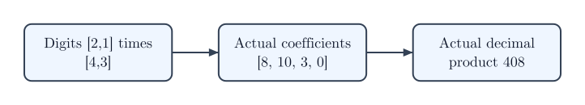
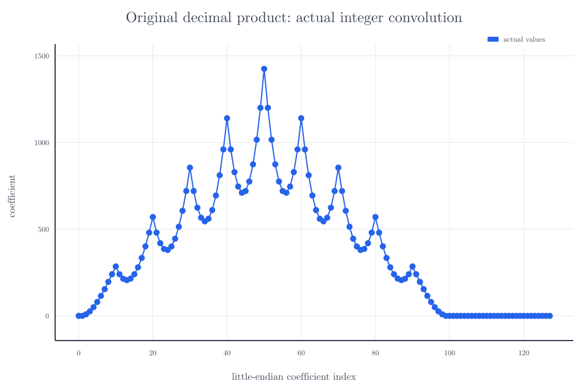
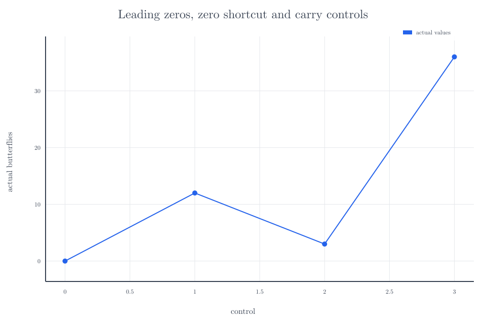
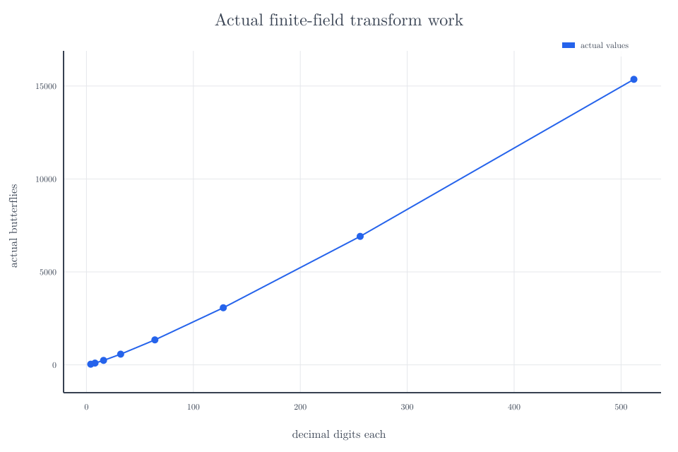

Exact decimal convolution: actual fixed-prime NTT stages and carries
Abstract
Multiply nonnegative decimal integers by exact finite-field convolution followed by decimal carry propagation. The historical report filename is retained, while the implemented bounded fixed-prime NTT method is distinguished from the arbitrary-length Schönhage–Strassen ring algorithm.
Mechanism and mathematical scope
Write decimal inputs as little-endian digit polynomials. Transform both under prime p=998244353 and primitive root 3, multiply corresponding residues, inverse transform and carry in base ten. Pad N to a power of two at least the sum of the normalized digit counts. Every ordinary coefficient is at most 81*min(a_digits,b_digits); checking that it is below p makes the recovered residue equal to the integer coefficient. The hard root limit is N<=2^23. Three radix-two transforms execute
butterflies. The report measures actual native butterflies and modular products; it does not use an n log n curve as a substitute for measured work or claim a wall-clock speedup.
A tiny actual producing history
The table and native concept diagram read the same producing execution. Every block below is a complete editable C++ program.
#include <dm/dm.hpp>
int main() {
namespace a = dm::algorithms;
namespace g = dm::graphics;
std::filesystem::create_directories("build");
auto r = a::ntt_multiply_trace("12", "34");
std::print("Actual coefficient vector `{}`; product {}.\n\n| coefficient index | actual coefficient | " "incoming carry | digit | outgoing carry |\n| ---: | ---: | ---: | ---: | ---: |\n",
r.coefficients, r.product);
for (const auto &s : r.carries)
std::print("| {} | {} | {} | {} | {} |\n", s.index, s.coefficient,
s.before, s.digit, s.after);
g::Diagram concept_diagram(48, 1100);
concept_diagram.node("n0", {0, 0}, "Digits [2,1] times [4,3]");
concept_diagram.node("n1", {5, 0},
std::format("Actual coefficients {}", r.coefficients));
concept_diagram.node("n2", {10, 0},
std::format("Actual decimal product {}", r.product));
concept_diagram.edge("n0", "n1").edge("n1", "n2");
concept_diagram.save_svg("build/schonhage_strassen_tiny.svg");
}Actual coefficient vector [8, 10, 3, 0]; product 408.
| coefficient index | actual coefficient | incoming carry | digit | outgoing carry |
|---|---|---|---|---|
| 0 | 8 | 0 | 8 | 0 |
| 1 | 10 | 0 | 0 | 1 |
| 2 | 3 | 1 | 4 | 0 |
| 3 | 0 | 0 | 0 | 0 |

The retained original experiment
#include <dm/dm.hpp>
int main() {
namespace a = dm::algorithms;
namespace g = dm::graphics;
std::filesystem::create_directories("build");
const std::string left =
"12345678901234567890123456789012345678901234567890", right =
"98765432109876543210987654321098765432109876543210";
auto r = a::ntt_multiply_trace(left, right);
auto repunit = a::ntt_multiply_run("11111111111", "11111111111");
std::print("Original 50-digit operands product: {}.\n\nOriginal 11-digit repunit squared: {}.\n\nActual " "transform length {}, butterflies {}, modular products {}.\n\n| coefficient position | " "actual recovered coefficient |\n| ---: | ---: |\n",
r.product, repunit.product, r.transform_size, r.butterflies,
r.modular_products);
std::vector<double> x, y;
for (std::size_t i = 0; i < r.coefficients.size(); ++i) {
std::print("| {} | {} |\n", i, r.coefficients[i]);
x.push_back(i);
y.push_back(r.coefficients[i]);
}
auto plot = g::RPlot::create();
plot.lines(x, y, "actual values", {37, 99, 235}).points(x, y, {37, 99, 235},
5).title(
"Original decimal product: actual integer convolution").x_label(
"little-endian coefficient index").y_label("coefficient");
plot.save_svg("build/schonhage_strassen_original.svg");
}Original 50-digit operands product: 1219326311370217952261850327338667885945115073915611949397448712086533622923332237463801111263526900.
Original 11-digit repunit squared: 123456790120987654321.
Actual transform length 128, butterflies 1344, modular products 3732.
| coefficient position | actual recovered coefficient |
|---|---|
| 0 | 0 |
| 1 | 0 |
| 2 | 9 |
| 3 | 26 |
| 4 | 50 |
| 5 | 80 |
| 6 | 115 |
| 7 | 154 |
| 8 | 196 |
| 9 | 240 |
| 10 | 285 |
| 11 | 240 |
| 12 | 214 |
| 13 | 206 |
| 14 | 215 |
| 15 | 240 |
| 16 | 280 |
| 17 | 334 |
| 18 | 401 |
| 19 | 480 |
| 20 | 570 |
| 21 | 480 |
| 22 | 419 |
| 23 | 386 |
| 24 | 380 |
| 25 | 400 |
| 26 | 445 |
| 27 | 514 |
| 28 | 606 |
| 29 | 720 |
| 30 | 855 |
| 31 | 720 |
| 32 | 624 |
| 33 | 566 |
| 34 | 545 |
| 35 | 560 |
| 36 | 610 |
| 37 | 694 |
| 38 | 811 |
| 39 | 960 |
| 40 | 1140 |
| 41 | 960 |
| 42 | 829 |
| 43 | 746 |
| 44 | 710 |
| 45 | 720 |
| 46 | 775 |
| 47 | 874 |
| 48 | 1016 |
| 49 | 1200 |
| 50 | 1425 |
| 51 | 1200 |
| 52 | 1016 |
| 53 | 874 |
| 54 | 775 |
| 55 | 720 |
| 56 | 710 |
| 57 | 746 |
| 58 | 829 |
| 59 | 960 |
| 60 | 1140 |
| 61 | 960 |
| 62 | 811 |
| 63 | 694 |
| 64 | 610 |
| 65 | 560 |
| 66 | 545 |
| 67 | 566 |
| 68 | 624 |
| 69 | 720 |
| 70 | 855 |
| 71 | 720 |
| 72 | 606 |
| 73 | 514 |
| 74 | 445 |
| 75 | 400 |
| 76 | 380 |
| 77 | 386 |
| 78 | 419 |
| 79 | 480 |
| 80 | 570 |
| 81 | 480 |
| 82 | 401 |
| 83 | 334 |
| 84 | 280 |
| 85 | 240 |
| 86 | 215 |
| 87 | 206 |
| 88 | 214 |
| 89 | 240 |
| 90 | 285 |
| 91 | 240 |
| 92 | 196 |
| 93 | 154 |
| 94 | 115 |
| 95 | 80 |
| 96 | 50 |
| 97 | 26 |
| 98 | 9 |
| 99 | 0 |
| 100 | 0 |
| 101 | 0 |
| 102 | 0 |
| 103 | 0 |
| 104 | 0 |
| 105 | 0 |
| 106 | 0 |
| 107 | 0 |
| 108 | 0 |
| 109 | 0 |
| 110 | 0 |
| 111 | 0 |
| 112 | 0 |
| 113 | 0 |
| 114 | 0 |
| 115 | 0 |
| 116 | 0 |
| 117 | 0 |
| 118 | 0 |
| 119 | 0 |
| 120 | 0 |
| 121 | 0 |
| 122 | 0 |
| 123 | 0 |
| 124 | 0 |
| 125 | 0 |
| 126 | 0 |
| 127 | 0 |

Explicit controls
#include <dm/dm.hpp>
int main() {
namespace a = dm::algorithms;
namespace g = dm::graphics;
std::filesystem::create_directories("build");
std::vector<double> x, y;
std::print("| left | right | actual product | actual butterflies |\n| --- | --- | --- | ---: |\n");
std::vector<std::pair<std::string, std::string>> controls{{"0", "999"},
{"00012", "0034"},
{"9", "9"},
{"9999", "9999"}};
for (std::size_t i = 0; i < controls.size(); ++i) {
const auto & [l, r] = controls[i];
auto p = a::ntt_multiply_run(l, r);
std::print("| {} | {} | {} | {} |\n", l, r, p.product, p.butterflies);
x.push_back(i);
y.push_back(p.butterflies);
}
bool invalid = false, cap = false;
try {
a::ntt_mul("0", "bad");
} catch (const std::invalid_argument &) {
invalid = true;
}
try {
a::NTTMultiplicationOptions o;
o.max_transform_size = 2;
a::ntt_multiply_run("12", "34", o);
} catch (const std::length_error &) {
cap = true;
}
std::print("Invalid second operand checked before zero shortcut {}; transform policy rejection {}.\n",
invalid, cap);
if (!invalid || !cap)
return 1;
auto plot = g::RPlot::create();
plot.lines(x, y, "actual values", {37, 99, 235}).points(x, y, {37, 99, 235},
5).title(
"Leading zeros, zero shortcut and carry controls").x_label("control").y_label("actual butterflies");
plot.save_svg("build/schonhage_strassen_controls.svg");
}| left | right | actual product | actual butterflies |
|---|---|---|---|
| 0 | 999 | 0 | 0 |
| 00012 | 0034 | 408 | 12 |
| 9 | 9 | 81 | 3 |
| 9999 | 9999 | 99980001 | 36 |
Invalid second operand checked before zero shortcut true; transform policy rejection true.

Actual selected work and sensitivity
#include <dm/dm.hpp>
int main() {
namespace a = dm::algorithms;
namespace g = dm::graphics;
std::filesystem::create_directories("build");
std::vector<double> x, y;
std::print("| decimal digits each | actual padded N | actual butterflies | actual modular products | " "actual root products |\n| ---: | ---: | ---: | ---: | ---: |\n");
for (std::size_t n : {4, 8, 16, 32, 64, 128, 256, 512}) {
auto r = a::ntt_multiply_run(std::string(n, '9'), std::string(n, '9'));
std::print("| {} | {} | {} | {} | {} |\n", n, r.transform_size,
r.butterflies, r.modular_products, r.root_products);
x.push_back(n);
y.push_back(r.butterflies);
}
auto plot = g::RPlot::create();
plot.lines(x, y, "actual values", {37, 99, 235}).points(x, y, {37, 99, 235},
5).title(
"Actual finite-field transform work").x_label("decimal digits each").y_label("actual butterflies");
plot.save_svg("build/schonhage_strassen_work.svg");
}| decimal digits each | actual padded N | actual butterflies | actual modular products | actual root products |
|---|---|---|---|---|
| 4 | 8 | 36 | 510 | 422 |
| 8 | 16 | 96 | 742 | 518 |
| 16 | 32 | 240 | 1155 | 611 |
| 32 | 64 | 576 | 1981 | 701 |
| 64 | 128 | 1344 | 3732 | 788 |
| 128 | 256 | 3072 | 7528 | 872 |
| 256 | 512 | 6912 | 15801 | 953 |
| 512 | 1024 | 15360 | 33799 | 1031 |

API and interpretation
This is a fixed-prime radix-two convolution with explicit root and coefficient limits. It is not an arbitrary-precision implementation of the original Schönhage–Strassen ring method. Complete operands are validated before leading-zero normalization or zero shortcuts. The actual root powers delegate to the canonical modular-power producer once per requested root.
Reusable producers, fixtures and histories live in the canonical C++ library. Captured records own their values and do not come from a separate report replay. Selected counters and record/scalar policies are specified at their API boundaries; they are not peak-byte or wall-time budgets. Synthetic structural inputs are controlled fixtures for these mechanisms.
References
Verification: all four complete programs executed; all four figures were
rendered and visually reviewed. HTML and Markdown exports preserve every
computed table and image. This ten-topic batch passes 89 scoped native cases, 21
directly instrumented ASan/UBSan cases, 95 executable public examples, 469/469
scoped documentation definitions, ten representative editor hovers and 3677
independent oracle records with 28988 checks. Frozen compatibility checks record
the intentional final-posterior RVM change. Receipts:
build/mepml-conversion/batch-334-343/.